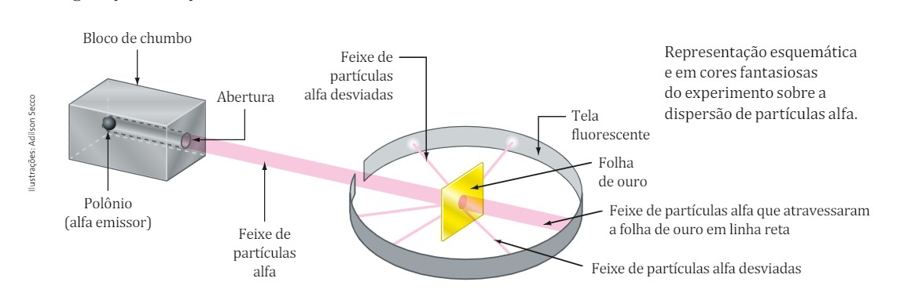

Experimento de Rutherford:
Rutherford fez uma câmera metálica fechada e nela colocou um
pequeno recipiente de chumbo.
Na frente desse recipiente que tinha uma abertura, ele posicionou uma
lâmina de ouro bastante fina.
Tudo isso estava conectado a um microscópio que era capaz de girar 360º
em torno da lâmina de ouro.
O objetivo era analisar a incidência das partículas que penetravam através da folha e
desintegravam-se espontaneamente.
A maior parte delas conseguia atravessar a folha (embora com alguma dificuldade),
outras ficavam bloqueadas,
enquanto havia ainda algumas que nem sequer eram afetadas.